Hardware · Fall 2022 · v1 built and tested; v2 designed
GoPro gimbal
A three-axis stabiliser with closed-loop control, built to smooth footage from snowboarding and skating.
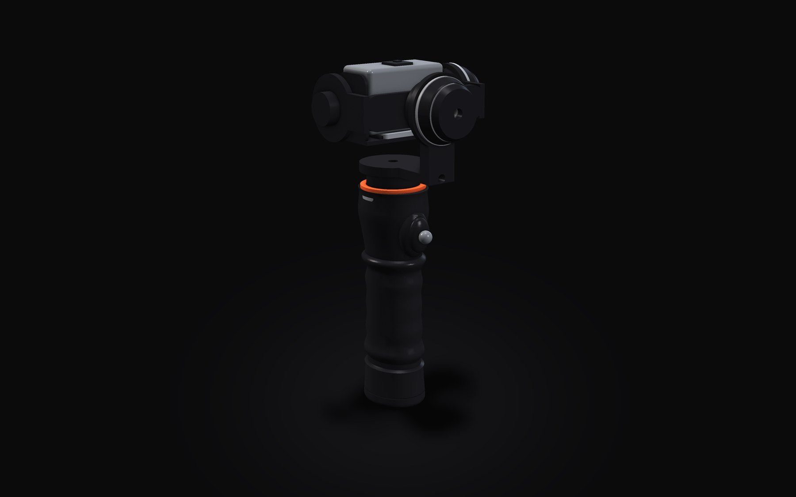
- 2.5 weeksto design, print and program
- 3 axesroll, pitch and yaw, one servo each
- 300readings averaged to remove yaw drift
- 4 partsprinted holder, to limit supports
The final assignment of ME360 Electromechanical Design at Boston University was to design a prototype that illustrates PID control. This gimbal keeps a GoPro stationary relative to three perpendicular planes set by the user, using a gyroscope, three servos and an Arduino.
01The brief
Any board, any sensors, any motors, and 2.5 weeks for the design, the 3D printing and the programming. The choice of problem was open, so I picked one I had: footage from snowboarding and skating is shaky because of bumpy ground and fast movement. A gimbal that holds the camera steady turns that into watchable video.
02Design
The first sketch showed the GoPro housing with three motors controlling its angle. The open questions were how to mount motors to printed parts stably and how to hold the whole thing. The answer was to carry it from above, so the camera hangs close to the ground for low shots, with the Arduino and battery above the moving parts, away from them. The holder was printed in four parts to minimise supports, and the tolerances came right once I had printed enough to know what the printer actually produces.

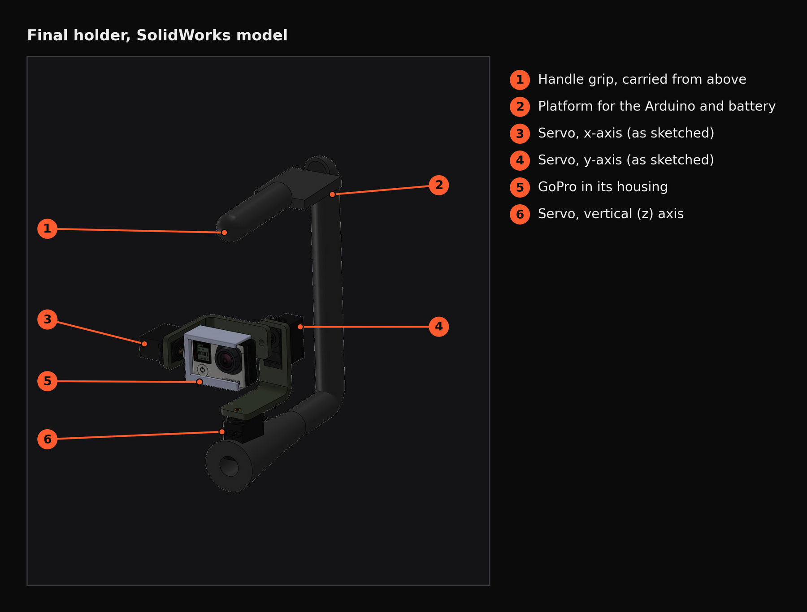

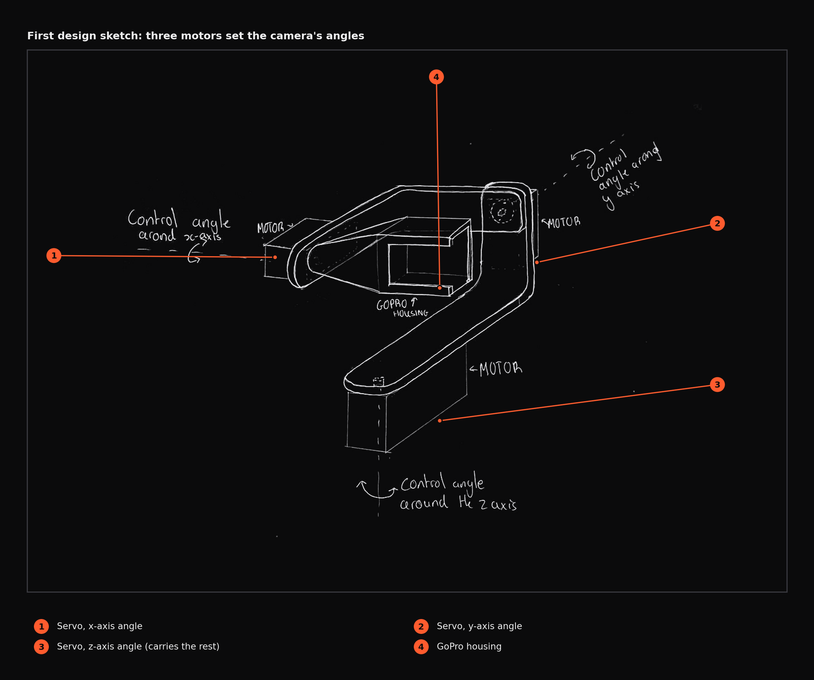

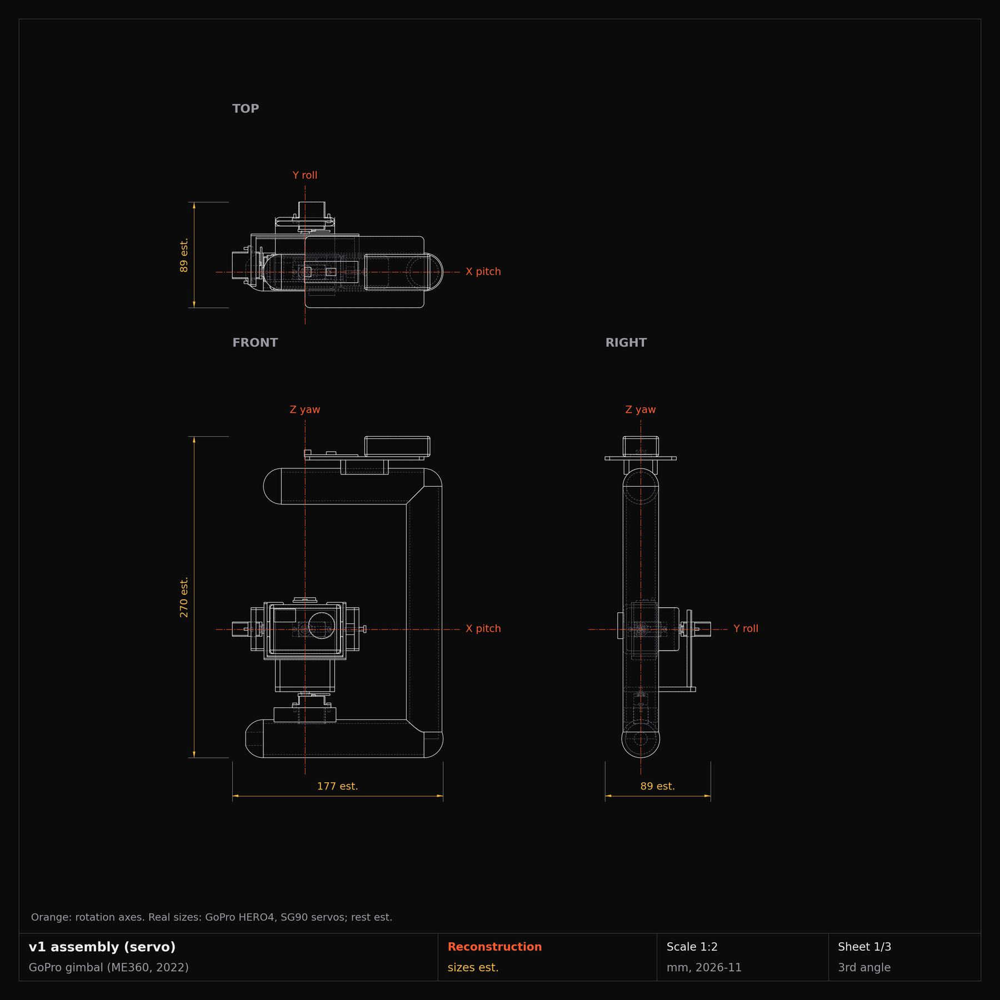

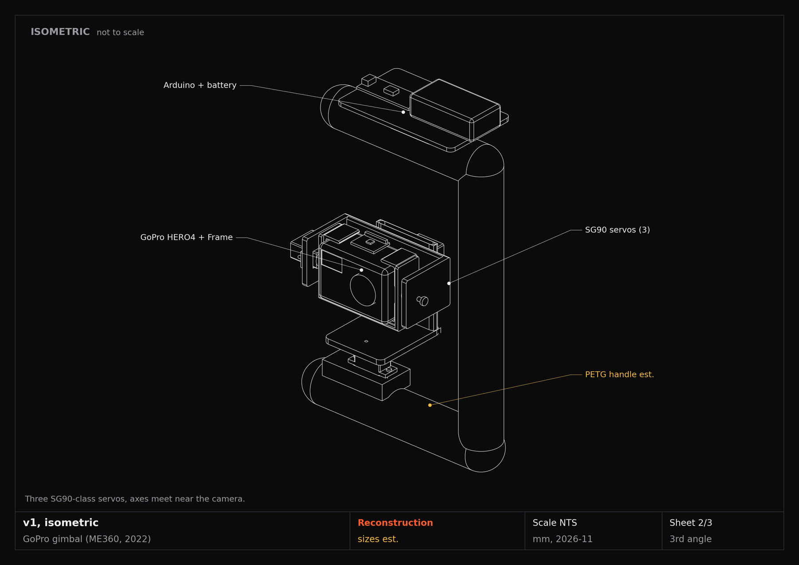

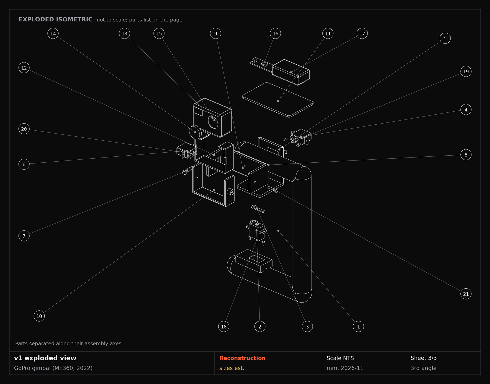
Parts list (21 items)
| No. | Part | Qty | Material | Note |
|---|---|---|---|---|
| 1 | Handle (hollow printed tube) | 1 | PETG (est. 3 mm wall) | size est.; ESTIMATE: shape from SolidWorks render; sizes assumed |
| 2 | Yaw (z) servo (SG90-class) | 1 | ABS case / metal gears | datasheet; TowerPro SG90 datasheet dims; model class assumed |
| 3 | Yaw (z) servo horn | 1 | Nylon | datasheet; TowerPro SG90 single horn |
| 4 | Roll (y) servo (SG90-class) | 1 | ABS case / metal gears | datasheet; TowerPro SG90 datasheet dims; model class assumed |
| 5 | Roll (y) servo horn | 1 | Nylon | datasheet; TowerPro SG90 single horn |
| 6 | Pitch (x) servo (SG90-class) | 1 | ABS case / metal gears | datasheet; TowerPro SG90 datasheet dims; model class assumed |
| 7 | Pitch (x) servo horn | 1 | Nylon | datasheet; TowerPro SG90 single horn |
| 8 | Yaw arm (L-bracket, printed) | 1 | PETG | size est.; ESTIMATE of Miguel's printed part 1 |
| 9 | Roll yoke (U-bracket, printed) | 1 | PETG | size est.; ESTIMATE of Miguel's printed part 2 |
| 10 | Camera cradle (U-channel, printed) | 1 | PETG | size est.; ESTIMATE of Miguel's printed part 3 |
| 11 | Electronics tray (printed) | 1 | PETG | size est.; ESTIMATE of Miguel's printed part 4 |
| 12 | GoPro Frame housing | 1 | Polycarbonate | size est.; ESTIMATE of outer size (64 x 20 x 45) |
| 13 | GoPro HERO4 Black | 1 | Camera | datasheet; GoPro HERO4 Black 59 x 41 x 30 mm, 88 g (spec) |
| 14 | GoPro lens barrel | 1 | Glass / aluminium | datasheet; part of the 88 g camera mass |
| 15 | MPU-6050 breakout (GY-521) | 1 | FR4 | size est.; ESTIMATE of board size 20 x 16 |
| 16 | Arduino (Nano class) | 1 | FR4 | size est.; ESTIMATE: the board is not recorded; Nano-size assumed |
| 17 | Battery pack (2S LiPo class) | 1 | LiPo | size est.; ESTIMATE: chemistry and size not recorded |
| 18 | Yaw servo screws (2) | 2 | Steel M2 x 6 | size est.; ESTIMATE of screw type |
| 19 | Roll servo screws (2) | 2 | Steel M2 x 6 | size est.; ESTIMATE of screw type |
| 20 | Pitch servo screws (2) | 2 | Steel M2 x 6 | size est.; ESTIMATE of screw type |
| 21 | Right pivot screw (M3) | 1 | Steel M3 | size est.; ESTIMATE |
03How it controls
The MPU-6050 measures roll, pitch and yaw against a calibrated position. The controller compares them with the target orientation and drives each servo to cancel the difference, which is the closed loop the assignment asked for. Two practical problems shaped the code. Yaw readings started out random, so the program takes 300 readings, averages them and subtracts the average from the first reading. And the holder's expected range of −90° to +90° had to be mapped to 0° to 180°, because servos do not accept negative values. Per-axis offsets point the camera forward, parallel to the holder.

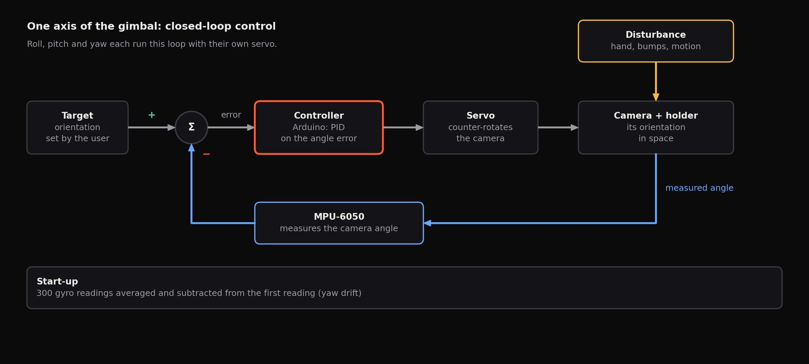

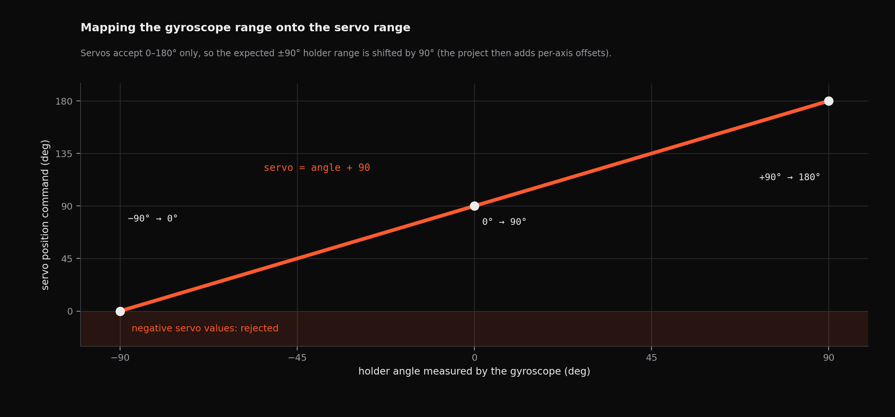

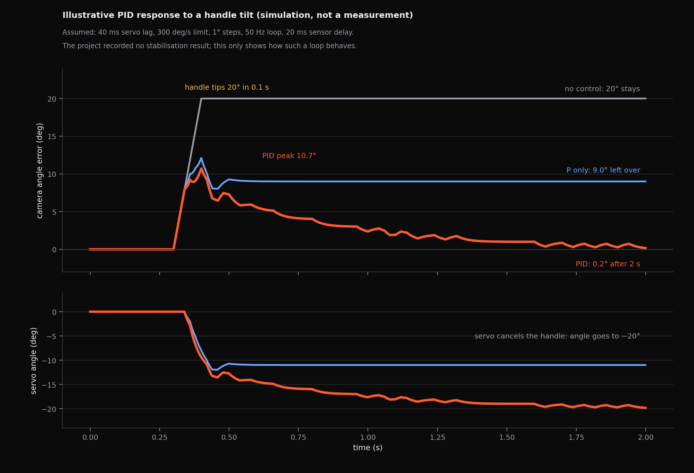
04Result
Clips of the finished gimbal show it doing what it was built to do: when the holder moves, the camera does not. There were no formal measurements, so I will not quote a stabilisation figure.
05Version 2: brushless
The servo gimbal works, but hobby servos are slow and noisy as stabiliser actuators, so version 2 is a redesigned three-axis brushless gimbal in the shape of a modern handheld: a slim handle with the battery and boards inside two thin shells, the yaw motor in the head, one aluminium arm, a U-yoke around the camera, and a quick-release cradle that slides to balance. The three motors are hollow-shaft gimbal motors on axes that meet at the camera centre, with the cables running through the shafts, and one orange ring where the handle meets the head. Redesigning it for looks as well as function brought my first v2 layout down from 720 g to 523 g, mostly by turning the solid handle tube into thin shells with the battery inside. The servo version 1 reconstructs at about 489 g, with estimated electronics.
The inertias come from the CAD model. The torque needed to hold and reject a hand shake is about 9.5, 20.4 and 23.4 mN·m on pitch, roll and yaw, against 53 mN·m peak and 28.5 mN·m continuous from the motor: a margin of 2.25 to 5.5× on peak and 1.2 to 3.0× continuous. Yaw is the tightest: its inertia is 10% higher than in that first layout, because the arm is a lever behind the camera, and I accepted a 1.2× continuous margin on a torque model that is itself uncertain. The rate loop crosses over at about 50 Hz and the angle loop at about 11 Hz. Pitch is free to ±100° and roll to ±30° without interference in the CAD, and yaw is limited to ±330° by the cable bundle.
In simulation, with the same 7° rms shake, version 1's servo loop leaves 3.3° rms (2.0° with better tuning) and version 2 leaves 0.37° rms. These are simulations of models, not measurements: version 1's stabilisation was never measured, so the comparison is model against model, and the motor constants are derived because the datasheet gives no KV. Power is about 1.26 W, roughly 6 hours on a 3S 850 mAh pack, an upper bound. The one-off prototype comes to about $541: $283 of bought parts and $258 of estimated machining and printing, with no quotes, so treat it as a plan. Weaknesses: the handle surfacing and thumb rest are simple lofts, fasteners are not modelled, and the renders use flat materials. Both CAD models are reconstructions or designs made for this page, since the original files are on another machine.

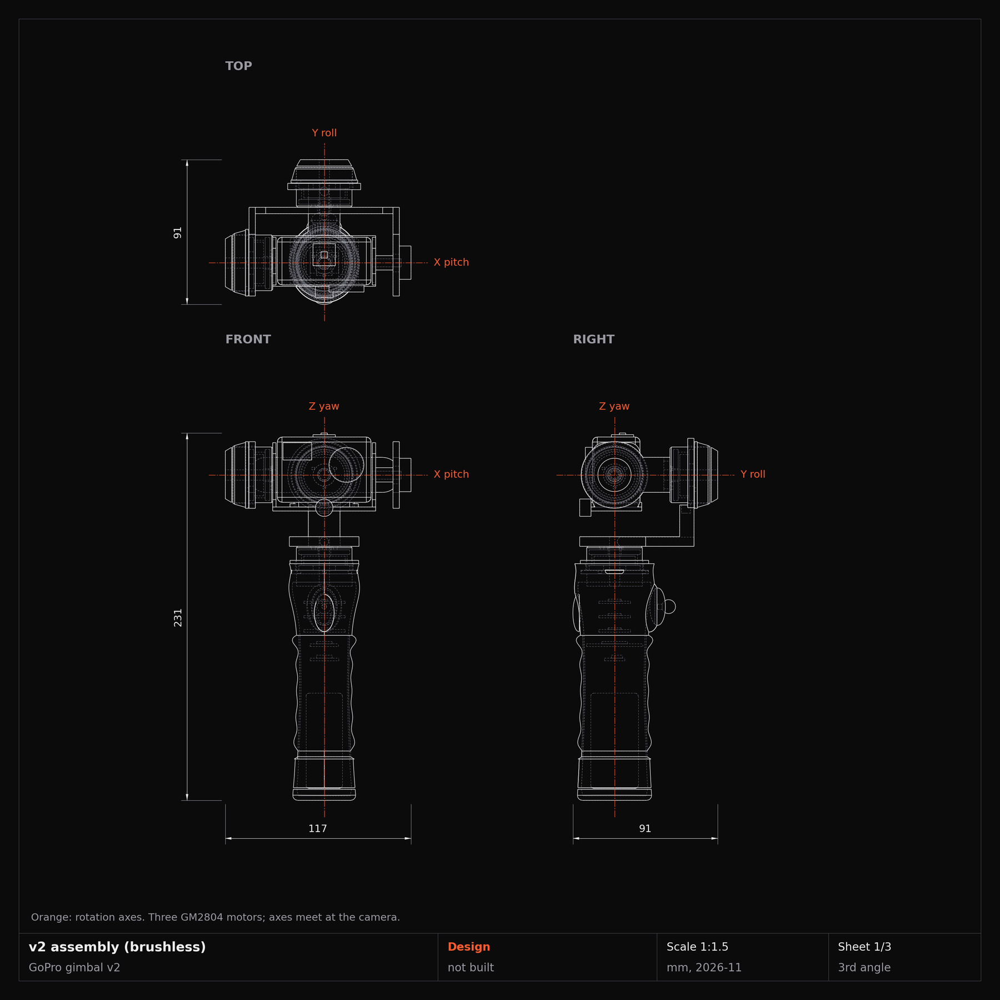

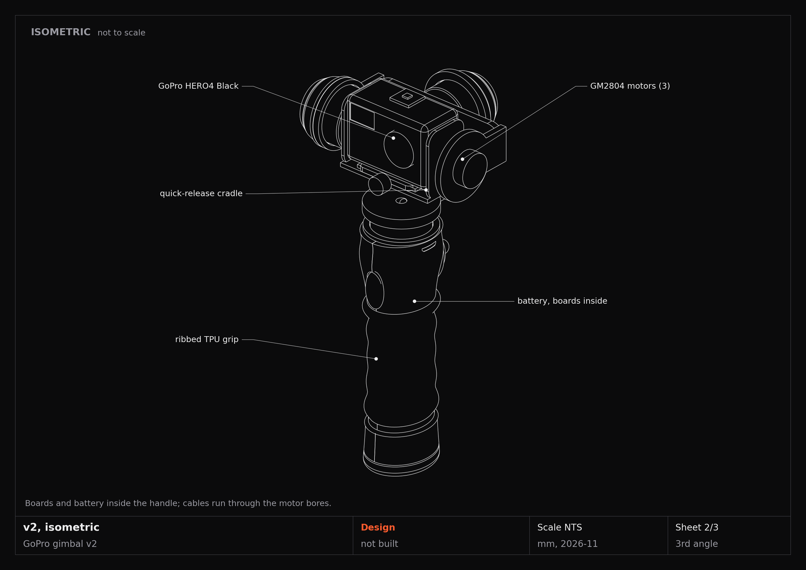

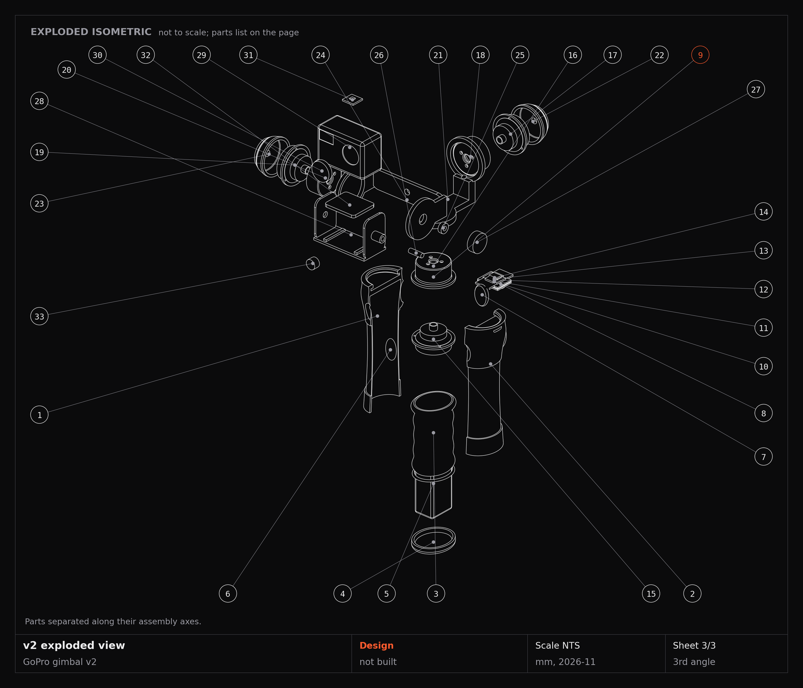
Parts list (33 items)
| No. | Part | Qty | Material | Note |
|---|---|---|---|---|
| 1 | Handle shell, left half | 1 | PA12 (SLS/MJF), dyed black, 2.2 mm wall | size est.; Design: loft of 14 elliptical sections, thumb rest, parting line on x = 0 |
| 2 | Handle shell, right half | 1 | PA12 (SLS/MJF), dyed black, 2.2 mm wall | size est.; Design |
| 3 | Grip skin (ribbed TPU sleeve) | 1 | TPU 70A, black | size est.; Design: 1.4 to 2.5 mm over the grip core |
| 4 | Battery door | 1 | PA12, dyed black | size est.; Design |
| 5 | Battery 3S LiPo 850 mAh | 1 | LiPo | datasheet; Tattu 850 mAh 11.1 V 3S1P XT30: 60 x 30 x 23 mm, 80 g (retailer listings) |
| 6 | Trigger (record / mode) | 1 | PA12 + silicone dome | size est.; Design |
| 7 | Thumb pad (control pad) | 1 | Silicone on PA12 | size est.; Design |
| 8 | Joystick cap | 1 | Anodised aluminium | size est.; Design |
| 9 | Accent ring (the one colour) | 1 | Anodised aluminium, #ff5b2e | size est.; Design |
| 10 | Yaw FOC driver (SimpleFOC Mini) | 1 | FR4 / ICs | datasheet; SimpleFOCMini v1.1 DRV8313, 26 x 20 mm |
| 11 | Roll FOC driver (SimpleFOC Mini) | 1 | FR4 / ICs | datasheet; SimpleFOCMini v1.1 DRV8313, 26 x 20 mm |
| 12 | Pitch FOC driver (SimpleFOC Mini) | 1 | FR4 / ICs | datasheet; SimpleFOCMini v1.1 DRV8313, 26 x 20 mm |
| 13 | Teensy 4.0 (MCU) | 1 | FR4 | datasheet; PJRC Teensy 4.0: 35.56 x 17.78 mm |
| 14 | 5 V buck (Pololu D24V10F5) | 1 | FR4 | datasheet; Pololu #2831, 18 x 13 x 3.5 mm |
| 15 | Yaw motor stator + encoder | 1 | Aluminium / copper / steel | datasheet; iFlight iPower GM2804 w/ AS5048A; flange est. |
| 16 | Yaw motor rotor bell | 1 | Anodised steel / NdFeB | datasheet; iFlight iPower GM2804; mass split est. |
| 17 | Roll motor stator + encoder | 1 | Aluminium / copper / steel | datasheet; iFlight iPower GM2804 w/ AS5048A; flange est. |
| 18 | Roll motor rotor bell | 1 | Anodised steel / NdFeB | datasheet; iFlight iPower GM2804; mass split est. |
| 19 | Pitch motor stator + encoder | 1 | Aluminium / copper / steel | datasheet; iFlight iPower GM2804 w/ AS5048A; flange est. |
| 20 | Pitch motor rotor bell | 1 | Anodised steel / NdFeB | datasheet; iFlight iPower GM2804; mass split est. |
| 21 | Yaw arm (CNC aluminium) | 1 | 6061-T6, anodised matte black, pocketed | size est.; Design (pocket factor 0.45 assumed) |
| 22 | Roll motor shroud | 1 | 6061-T6, anodised matte black | size est.; Design |
| 23 | Pitch motor shroud | 1 | 6061-T6, anodised matte black | size est.; Design |
| 24 | Roll yoke (CNC aluminium) | 1 | 6061-T6, anodised matte black, pocketed | size est.; Design (pocket factor 0.45 assumed) |
| 25 | Right pivot bearing MR115ZZ | 1 | Steel | datasheet; NSK MR115ZZ 5 x 11 x 4 (catalogue) |
| 26 | Right pivot pin (5 mm) | 1 | Steel | size est.; Design |
| 27 | Pivot cap / roll balance mass | 1 | Tungsten alloy W-Ni-Fe (17 g/cm3) | size est.; Design: thickness solved so the roll-group CG sits on the roll axis |
| 28 | Camera cradle (quick-release jaws) | 1 | 6061-T6, anodised matte black | size est.; Design |
| 29 | GoPro HERO4 Black | 1 | Camera | datasheet; GoPro HERO4 Black 59 x 41 x 30 mm, 88 g |
| 30 | GoPro lens barrel | 1 | Glass / aluminium | datasheet; part of the 88 g camera mass |
| 31 | IMU board (ICM-42688-P) | 1 | FR4 | size est.; Design: 14 x 14 mm board, size est. |
| 32 | Quick-release slide plate | 1 | 6061-T6, anodised | size est.; Design: slides +-6 mm for balance |
| 33 | Slide lock knob | 1 | Anodised aluminium | size est.; Design |

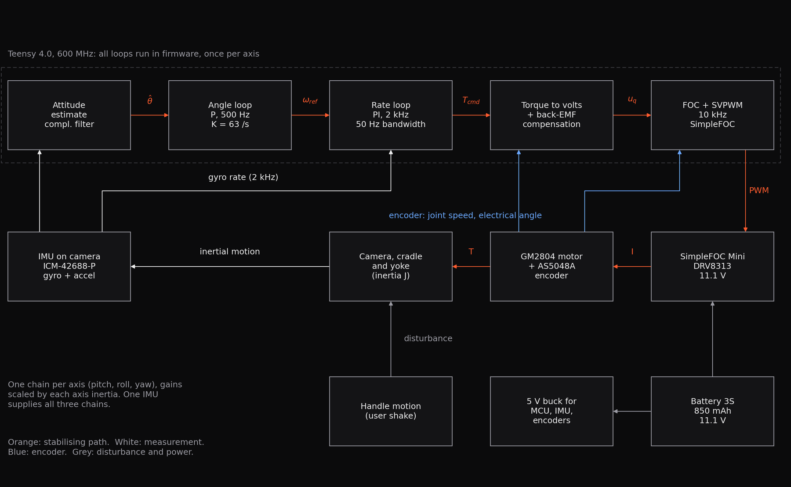

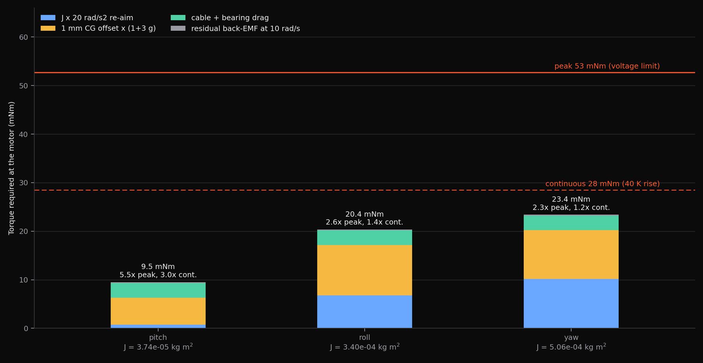

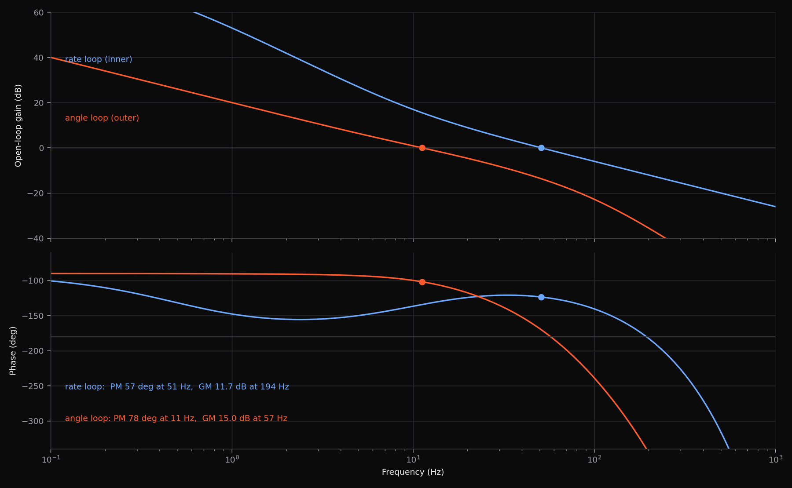

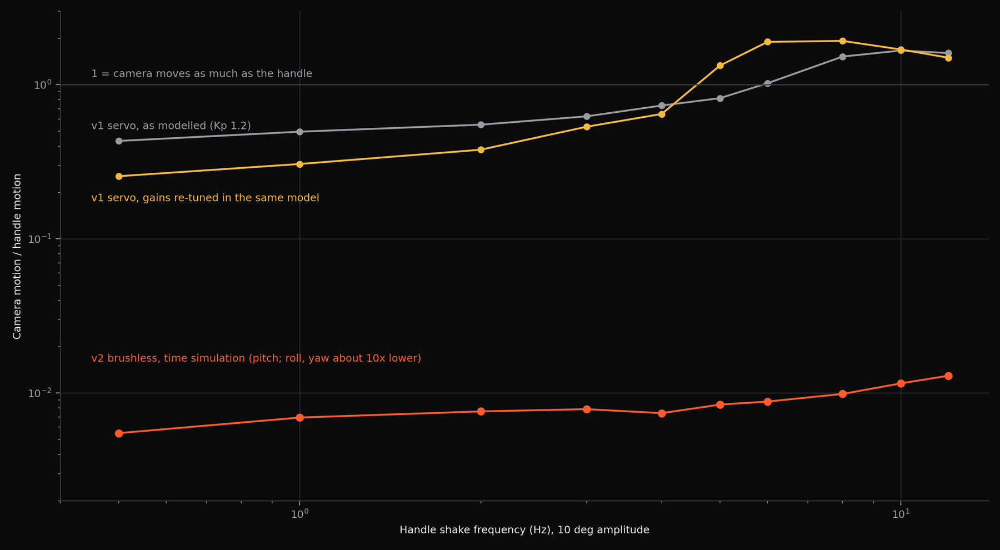

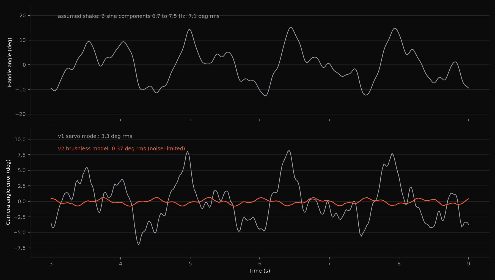

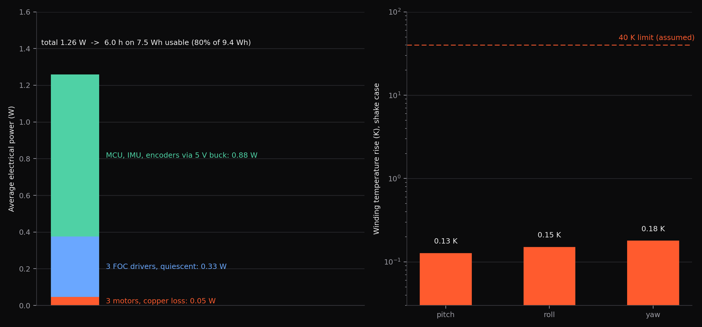

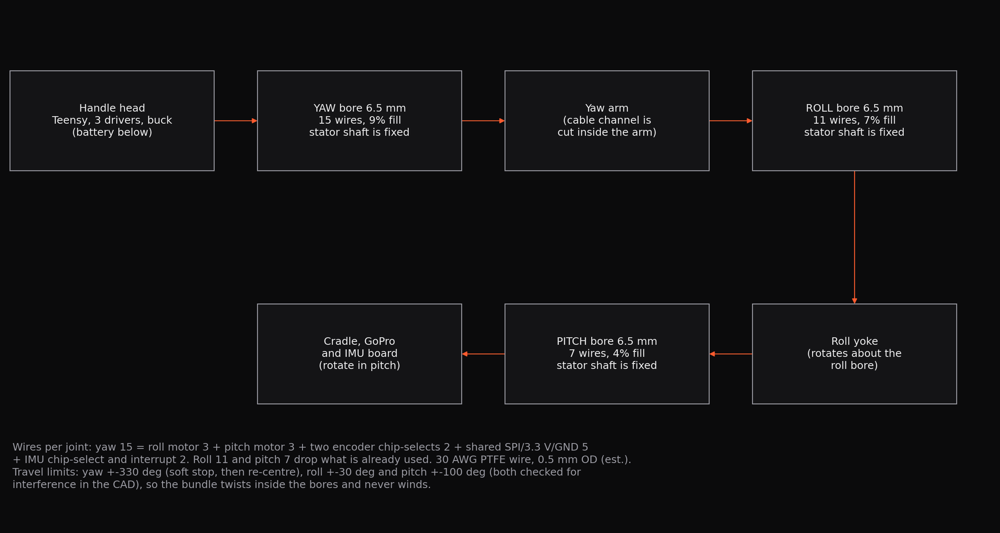

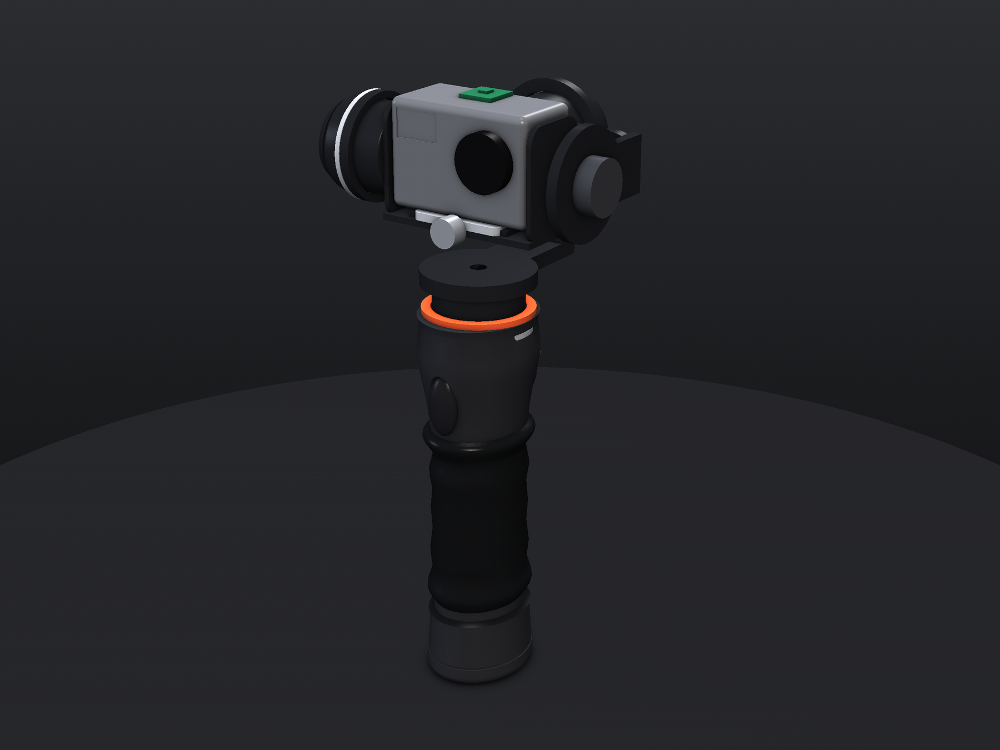

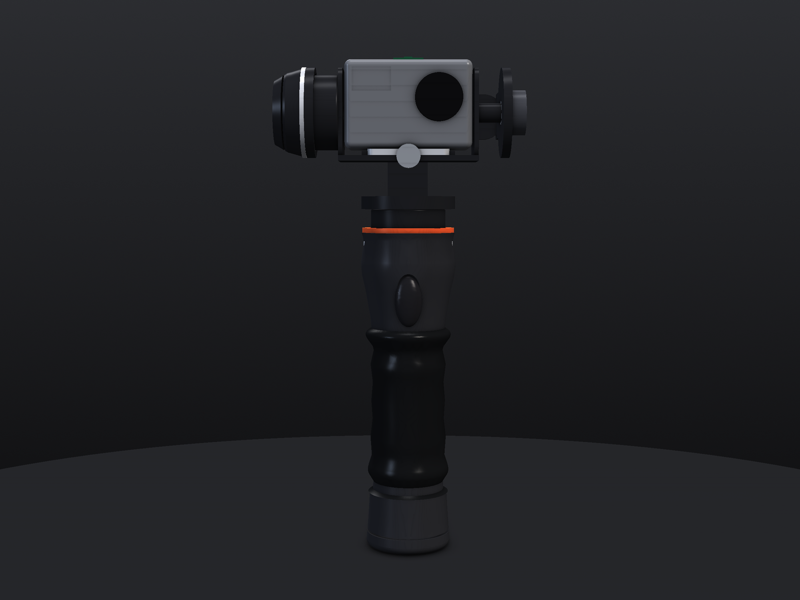

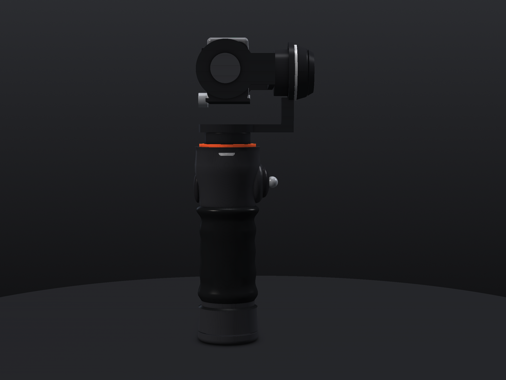

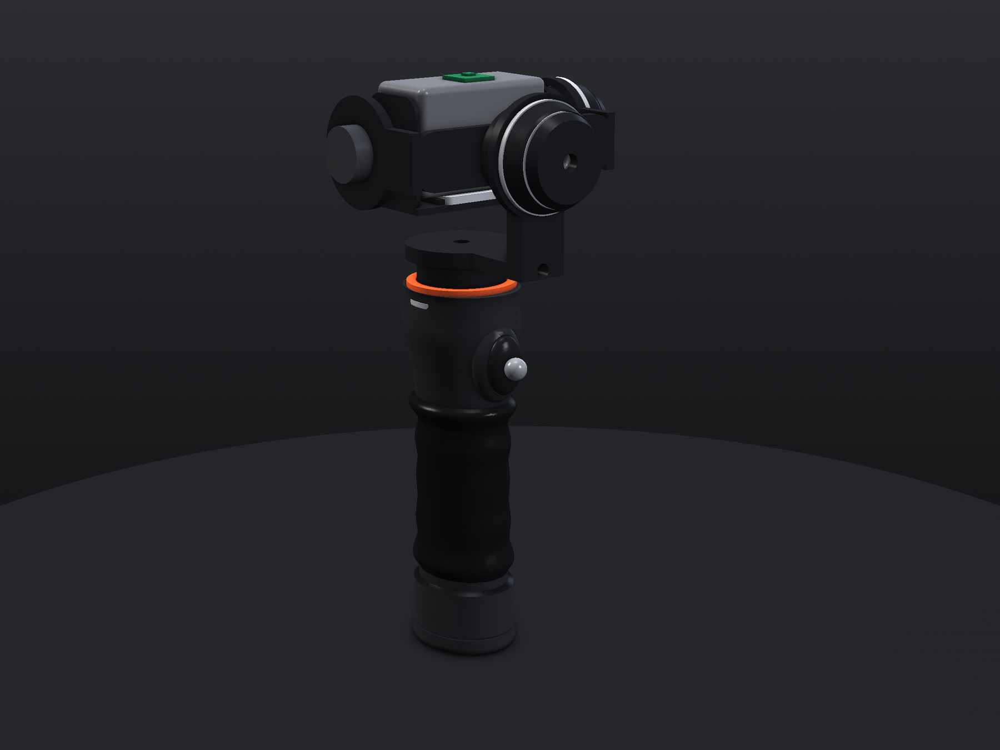

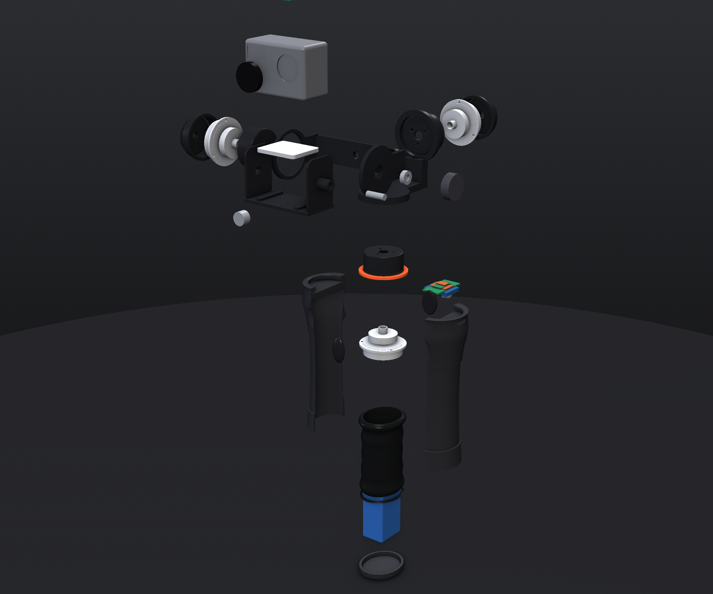
06Limits, and what I would change
Two limits showed up in testing. The delay between measuring and moving made quick movements hard to correct in time, and the servos' step resolution capped how smooth a correction could be. Brushless motors give a much smoother transition between angles and a faster response, which is what version 2 does.

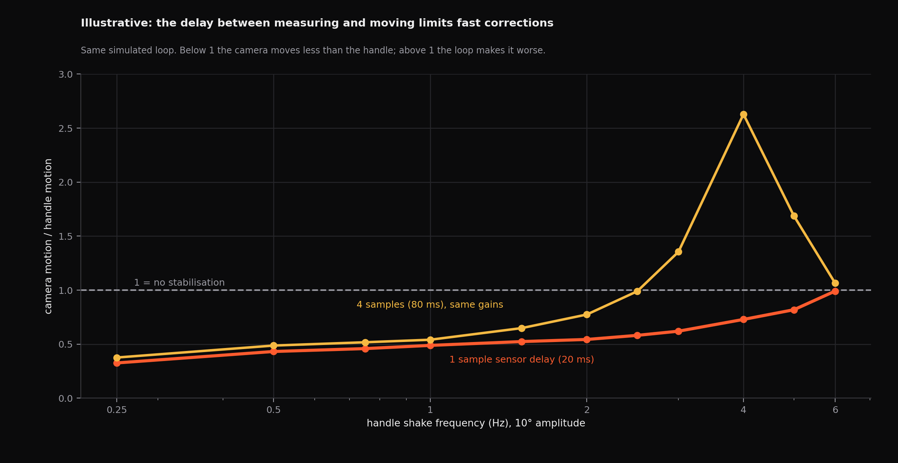